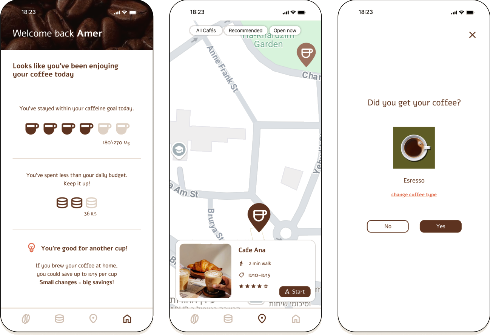

01
where are you heading?
COFFEETRACK opens on one question: where are you heading? Pick a destination and the map answers time until the next bus, and every café around the stop, already plotted.
An app that helps you quickly see if you can afford another coffee, and find the best place nearby to buy it, while keeping track of your budget and your caffeine limits.
COFFEETRACK opens on one question: where are you heading? Pick a destination and the map answers time until the next bus, and every café around the stop, already plotted.
A map of your location and the cafés around you, with personalized recommendations based on where you're going, distance from the bus stop, distance from you, price range, and rating. Choose a café and the map draws the whole journey — from where you are, to the café, on to the stop, and through home.
A quick check-in logs your cappuccino, updates today's spending and cups and lets you know, gently, when it's time for no more coffee today.
Log a coffee and the map responds — cafés go quiet and stop being tappable once the day's caffeine limit is reached. The summary bar shows where the day stands on caffeine and spend; open it and the same picture unfolds across the week.
People often lose track of how much they spend on coffee and how much caffeine they consume which makes it hard to stay on budget and keep healthy habits.
Help people quickly see whether they can afford another coffee — and find the best place to buy it while staying within their budget and caffeine limits.
"I realized I spend a lot on coffee." Frustration: money slips away without noticing, cup by cup.
Installing CaffiTrack. Hope: "maybe this app will help me understand what I actually spend."
Starting to track. Curiosity: logging purchases, exploring the daily budget and new cafés nearby.
Discovering improving habits. Enthusiasm: finding the recommended café, receiving encouragement, and watching spending drop week by week.


Can users easily understand their spending and caffeine status at a glance? Did they find the nearby café recommendations useful? Did the app feel simple and guiding after a busy day?
The combination of health data and spending in one view · the visual design language · the positive, encouraging messages · the personal tailoring of recommendations.
Screens felt overloaded with information at the end of a long day · users didn't always know the "first thing to do" on opening the app · some didn't realize a purchase was recorded, because the confirmation wasn't prominent enough.
Today's spending & quantity of cups, plus recommended cafés nearby on the map
Personalized café recommendations along your way
Name, image, rating, time and average price
The route on the map with route time details
Log the cup, spending updates, with a note when it's "no more coffee today" and a weekly overview
Warm coffee browns on a cream ground, a friendly cup mark, and positive, encouraging copy a brand that feels like your favorite café, not a finance app.
A smarter way to drink coffee: your spending and caffeine at a glance, personalized café recommendations nearby, and encouraging feedback that turns tracking into a habit — all in one simple, guiding flow.
Show the app